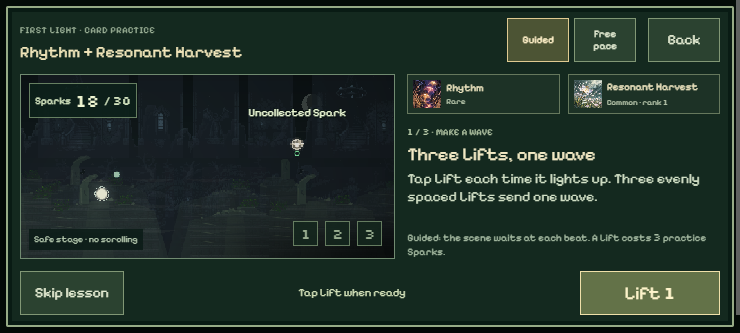
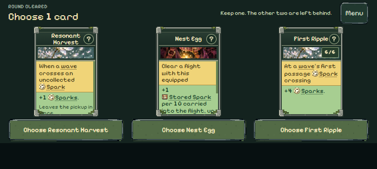
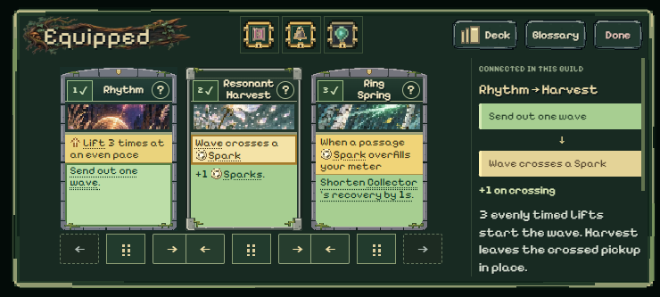
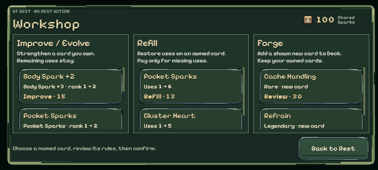
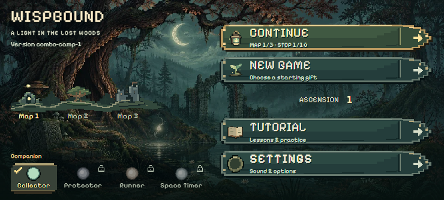

Try Rhythm + Harvest

Choose one card

Connected cards and relics

Spend Stored Sparks at Rest

Version on the main menu

Release combo-camp-1. Try the live samples below. They use disposable data and leave your saved journeys unchanged.




